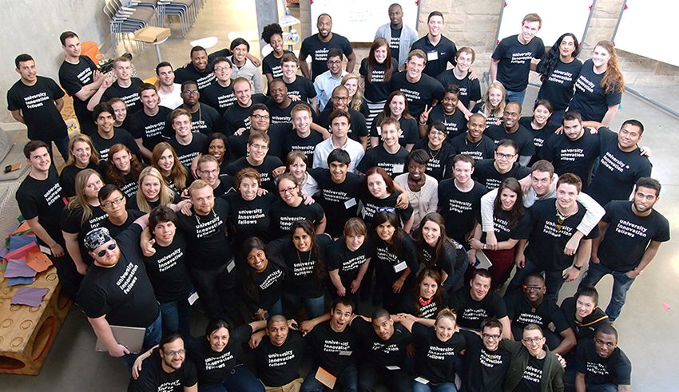

Apply by October 31 to Epicenter’s University Innovation Fellows
(September 19, 2014) - This week, the National Center for Engineering Pathways to Innovation (Epicenter) opened the application process for its University Innovation Fellows program for U.S. college and university students. The application deadline is October 31, 2014. Apply at dreamdesigndeliver.org/apply.
The University Innovation Fellows program empowers students to become agents of change at their schools. The Fellows are a national community of students in engineering and related fields who work to ensure that all students gain the knowledge, skills and attitudes required to compete in the economy of the future. To accomplish this, the Fellows advocate for lasting institutional change and create opportunities for students to engage with entrepreneurship, innovation, creativity, design thinking and venture creation at their schools.
The program is run by Epicenter, which is funded by the National Science Foundation and directed by Stanford University and VentureWell (formerly NCIIA).
Fellows have created student design and maker spaces, founded entrepreneurship clubs and organizations, worked with faculty to design courses, and hosted events and workshops. At present, there are 110 active Fellows at 74 institutions, and another 61 candidates are currently in training to become Fellows.
“It is so critical for students to have an entrepreneurial mindset in today’s economy,” said Humera Fasihuddin, leader of the University Innovation Fellows program for Epicenter. “Fellows are having a powerful impact at their schools. They are working alongside students, faculty and their university leaders to prepare all students to learn this mindset and pursue their career aspirations.”
Fellows take part in online training and in-person regional and national gatherings to study their campus ecosystems. Throughout the year, they have opportunities to learn from their network of Fellows, Epicenter mentors, and leaders in academia and industry.
At the University of Oklahoma, one of many schools with students in the program, Lauren Abston and Ryan Phillips are working together as University Innovation Fellows. Both Fellows enjoyed the opportunity to meet other like-minded students at the Fellows’ Annual Meetup in Silicon Valley in March 2014.
“The other Fellows and I were able to share ideas and hear about programs already in place on other campuses that we could implement at our own colleges,” Lauren said. “I came home with a renewed understanding and desire to increase entrepreneurship on OU’s campus.”
At their school, Lauren and Ryan are working with faculty and administrators to create an innovation hub on campus that will allow students, researchers, and community entrepreneurs to work together.
“Once it is completed, almost every freshman at the university will interact with the space during their first year on campus,” Ryan said. “Opportunities like this will fundamentally change the way students learn in higher education and pave the way for the next generation of innovators.”
The Fellows’ faculty sponsor, Jeff Moore, Executive Director of the University of Oklahoma’s Center for the Creation of Economic Wealth, says that Lauren and Ryan are creating a brand for entrepreneurship and innovation on campus.
“Their designation as University Innovation Fellows has elevated them and the entire topic of innovation on campus,” he said. “They are contributing to building a series of innovation events for the next school year, including creating co-working days, developing popup collaborative spaces and makerspace events, and planning speakers and events around coding, innovation and creativity. This is part of a broader effort to build a strong innovation culture on campus led by senior faculty and administrators, and Lauren and Ryan have a meaningful seat at the table because of their role as Fellows.”
Students, faculty and university leaders are forging partnerships like this across the country as part of the University Innovation Fellows program.
The application deadline for the University Innovation Fellows program is October 31, 2014. Students can request an application, and faculty can request an application to sponsor a student at dreamdesigndeliver.org/apply.
Application and program details:
- The application deadline is October 31, 2014.
- Ideally, applicants are undergraduate students in engineering or other STEM fields, but Epicenter is thrilled to consider undergraduate and graduate applicants from all disciplines who are passionate about technology, innovation and entrepreneurship.
- Students can apply individually or in groups of up to five, called a Leadership Circle.
- Applicants are sponsored by a faculty or administrator who can provide a program fee, secure funding for travel and provide a letter of support.
- Following acceptance, students take part in an online training and in-person events. Upon successful completion, students participate in a three-day immersive experience in Silicon Valley.
About Epicenter:
The National Center for Engineering Pathways to Innovation (Epicenter) is funded by the National Science Foundation and directed by Stanford University and VentureWell (formerly NCIIA). Epicenter’s mission is to empower U.S. undergraduate engineering students to bring their ideas to life for the benefit of our economy and society. To do this, Epicenter helps students combine their technical skills, their ability to develop innovative technologies that solve important problems, and an entrepreneurial mindset and skillset. Learn more and get involved at epicenter.stanford.edu.
Media contact:
Laurie Moore
Communications Manager, Epicenter
(650) 561-6113
llhmoore@stanford.edu